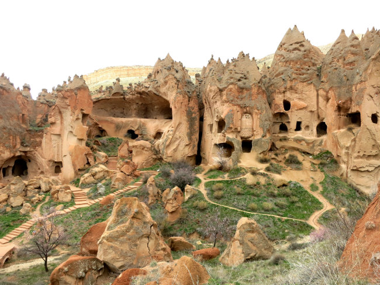

Türkiye’nin doğal, tarihi ve kültürel özellikleriyle en önemli destinasyonlarından olan
Kapadokya, kendi içinde de çok özel alanları barındırmaktadır. Doğal yapısı ve arkeolojik miras
göz önüne alınarak açık hava müzesi ilan edilen Zelve, bölgedeki iki açık hava müzesinden
birisidir. UNESCO Dünya Kültür Mirası ve Göreme Tarihi Milli Park alanı içinde bulunan Zelve
Açıkhava Müzesi aynı zamanda doğal ve arkeolojik sit alanıdır. Bu koruma statüleri, çalışma
sahası çevresinde yerel halkın turizm yatırımı yapmasını ve turizmde yer almasını
güçleştirmiştir. Bu çalışmada Zelve Açık Hava Müzesi örneğinde koruma statülerinin korumakullanma dengesine etkisi değerlendirilmiştir. Nitel araştırma yöntemlerinden durum
çalışmasının kullanıldığı araştırmada verilerin toplanmasında odak grup görüşmesi, gözlem,
görüşme ve doküman analizinden yararlanılmıştır. Açık hava müzesi ilanından önce sahayı
kendi arazisi olarak gören köy halkı, müze ilanı ve diğer koruma statüleriyle Zelve’nin
ellerinden alındığını düşünmektedir. Araştırmada yöre halkının karşılaştığı problemler ortaya
konulmuş ve muhtemel çözüm önerileri üzerinde durulmuştur.
